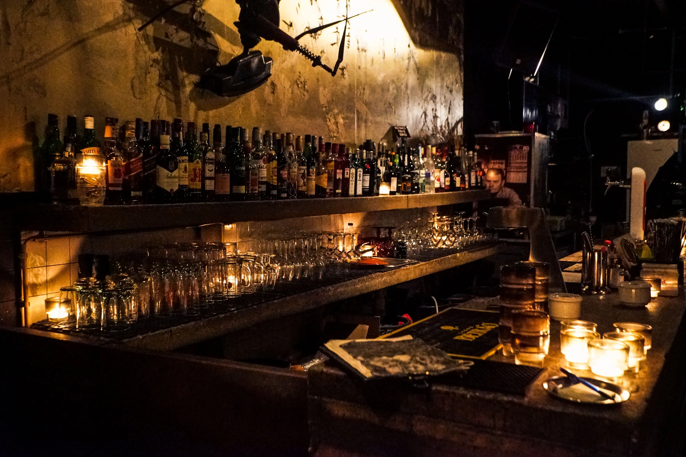

Encontrá lo que buscás con nosotrxs

El whisky (del gaélico escocés: uisge-beatha), whiskey (del irlandés: uisce beatha o fuisce), es una bebida alcohólica y espirituosa obtenida por la destilación de la malta fermentada de cereales como cebada, trigo, centeno y maíz, y su posterior añejamiento en barriles de madera, tradicionalmente de roble blanco.
Productos y servicios
Vení a disfrutar con quién quieras nuestra exclusiva cata, dónde encontrarás los mejores whisky de autor.
